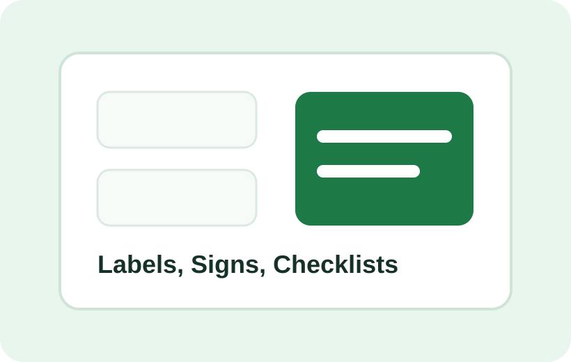

Classroom Labels
Clean labels for supplies, shelves, cubbies, and learning zones.
Shop Printables
Downloadable classroom labels, checklists, signs, and procedure helpers designed for childcare teams that need clear systems quickly.

Clean labels for supplies, shelves, cubbies, and learning zones.
Printable prompts for opening, closing, cleaning, and safety review.
Warm, professional reminders for hygiene and classroom care.
Simple printable organization aids for center readiness and inspections.